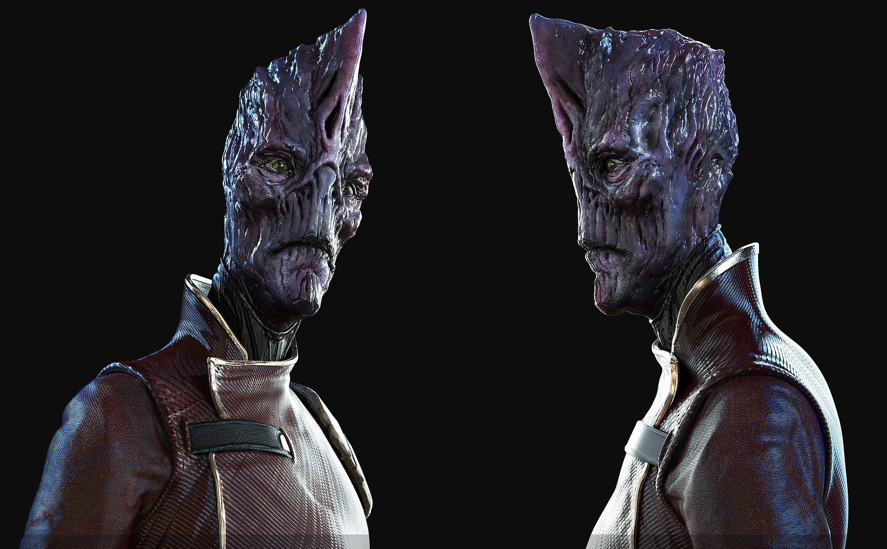
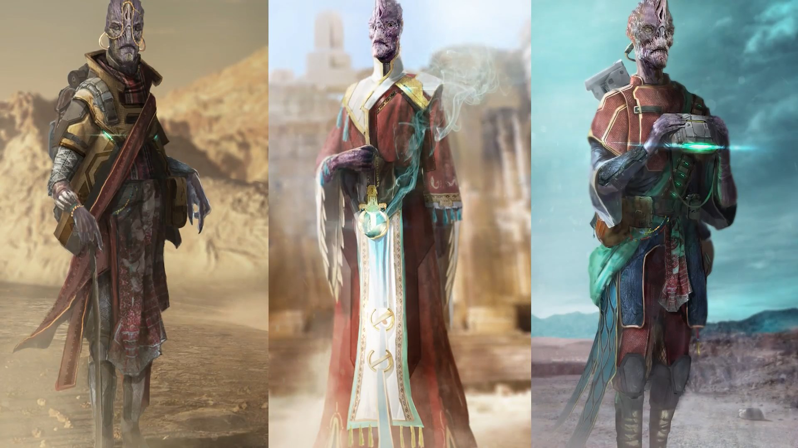
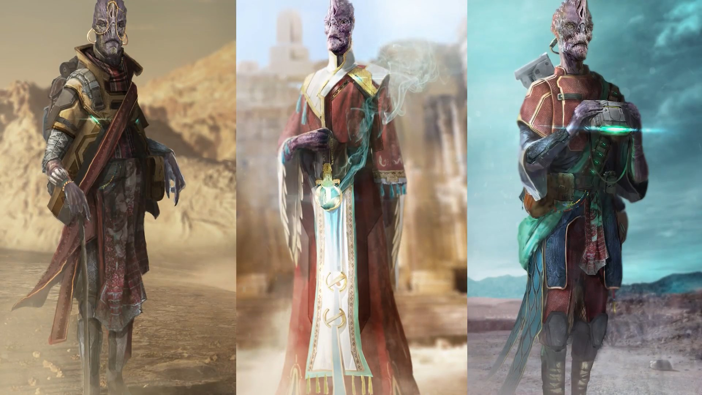

ALIENRASSE: BANU

Excurs - Alienrasse: Banu
Die Banu waren die ersten interstellaren Freunde der Menscheit. Als die Banu un die Menschen zusammenkamen und das erste interstellare Friedens- und Handelsabkommen unterzeichneten, begannen sie zu handeln und halfen sich gegenseitig dabei, ins Universum zu expandieren. Die Banu-Gesellschaft kombiniert die Menschlichen konzepte von Familie und Unternehmen zu einer sozialen Einheit, die als Souli bekannt ist - einen Zusammenleben, das sich um ein Unternehmen dreht. Dieses Souli - System passt zu der Tatsache, dass die Banu die perfekten Haendler des Universums sind, da sind jeder auf einen einzigen Dienst oder eine bestimmte Ware spezialisiert hat und sich mit anderen Souli zusammenschliessen muss, um alle notwendigen Gueter zu beschaffen.
Die Banu waren die ersten interstellaren Freunde der Menscheit. Als die Banu un die Menschen zusammenkamen und das erste interstellare Friedens- und Handelsabkommen unterzeichneten, begannen sie zu handeln und halfen sich gegenseitig dabei, ins Universum zu expandieren. Die Banu-Gesellschaft kombiniert die Menschlichen konzepte von Familie und Unternehmen zu einer sozialen Einheit, die als Souli bekannt ist - einen Zusammenleben, das sich um ein Unternehmen dreht. Dieses Souli - System passt zu der Tatsache, dass die Banu die perfekten Haendler des Universums sind, da sind jeder auf einen einzigen Dienst oder eine bestimmte Ware spezialisiert hat und sich mit anderen Souli zusammenschliessen muss, um alle notwendigen Gueter zu beschaffen.
Die Banu sind im Allgemeinen ziemlich desorganisiert, jeder ihrer Planeten ist eine unabhaengige Welt mit einem eigenen spezifischen Regierungstyp, was die allgemeine Interaktion mit den Banu etwas schwierig macht, Menschen und Banu aber wahrscheinlich auch davor bewahrt hat, sich waehrend der Messer-Zeit zu bekaempfen. Es gibt gelegentlich Grenzstreitigkeiten mit den Banu, vor allem, wenn Kriminelle ueber die Grenze fliehen.
Das Hauptgeschaeft der Banu ist der Handel. Daher gibt es einen riesigen und freien Handelsmarkt zwischen beiden Kulturen, der sich im Laufe der Jahrhunderte praechtig entwickelt hat. Bei den Banu kann man alles finden, wenn man die credits dafuer hat. Die UEE hat versucht, den Warenfluss in und aus dem Banu Protektorat ein wenig zu reduzieren - allerdings mit nur wenig erfolg. Dafuer gibt es zwei Hauptgruende. Zum einen ist dies ihre Organisation. Das Banu Protektorat ist eine Sammlung unabhaengiger Planeten, so dass es schwierig ist, mit ihnen ueber umfassende Handelsprotokolle zu verhandeln. Tatsaechlich gab es in den vergangenen zehn Jahren dazu mehrere Vorschlaege, die noch auf die Ueberpruefung bei der naestenVersammlung des UEE-Senats warten. Zweitens: ihre Lage. Waehrend es auf der einen Seite der UEE einen Cluster von Banu-Systemen gibt, haben sie auch isolierte Systeme beansprucht, die im ganzen bekannten Raum verstreut sind. Eines liegt etwa der Xi'An, eines sogar im Vanduul-Raum. Die UEE ist sich immer noch nicht sicher, wie sie dorthin gekommen sind. Ob es noch mehr Systeme gibt, die von den Banu beansprucht wurden, ist derzeit nicht bekannt.

Xi'An: freundlich
Vanduul: prekaer, aber freundlich
Banu-Sprache bezieht sich auf eine Familie von Sprachen, die von der Banu stammen und von ihr gesprochen werden. Obwohl alle Banu das gleiche Schriftsystem haben, sprechen sie viele Dialekte, von denen einige nicht gegenseitig verständlich sind. Xenolinguisten glauben, dass dies teilweise auf ihr Fehlen sowohl einer zentralen Heimatwelt als auch einer zentralisierten Regierung zurückzuführen ist. Die Banu haben keinen offiziellen Namen für ihre Sprachen; Stattdessen würde einer, der Banu spricht, sagen, dass sie " Banu-sprechen" (yufu zuBanu, oder yufu zo uBanu).
Die Banu waren die ersten interstellaren Freunde der Menscheit. Als die Banu un die Menschen zusammenkamen und das erste interstellare Friedens- und Handelsabkommen unterzeichneten, begannen sie zu handeln und halfen sich gegenseitig dabei, ins Universum zu expandieren. Die Banu-Gesellschaft kombiniert die Menschlichen konzepte von Familie und Unternehmen zu einer sozialen Einheit, die als Souli bekannt ist - einen Zusammenleben, das sich um ein Unternehmen dreht. Dieses Souli - System passt zu der Tatsache, dass die Banu die perfekten Haendler des Universums sind, da sind jeder auf einen einzigen Dienst oder eine bestimmte Ware spezialisiert hat und sich mit anderen Souli zusammenschliessen muss, um alle notwendigen Gueter zu beschaffen.
Die Banu sind im Allgemeinen ziemlich desorganisiert, jeder ihrer Planeten ist eine unabhaengige Welt mit einem eigenen spezifischen Regierungstyp, was die allgemeine Interaktion mit den Banu etwas schwierig macht, Menschen und Banu aber wahrscheinlich auch davor bewahrt hat, sich waehrend der Messer-Zeit zu bekaempfen. Es gibt gelegentlich Grenzstreitigkeiten mit den Banu, vor allem, wenn Kriminelle ueber die Grenze fliehen.
Das Hauptgeschaeft der Banu ist der Handel. Daher gibt es einen riesigen und freien Handelsmarkt zwischen beiden Kulturen, der sich im Laufe der Jahrhunderte praechtig entwickelt hat. Bei den Banu kann man alles finden, wenn man die credits dafuer hat. Die UEE hat versucht, den Warenfluss in und aus dem Banu Protektorat ein wenig zu reduzieren - allerdings mit nur wenig erfolg. Dafuer gibt es zwei Hauptgruende. Zum einen ist dies ihre Organisation. Das Banu Protektorat ist eine Sammlung unabhaengiger Planeten, so dass es schwierig ist, mit ihnen ueber umfassende Handelsprotokolle zu verhandeln. Tatsaechlich gab es in den vergangenen zehn Jahren dazu mehrere Vorschlaege, die noch auf die Ueberpruefung bei der naestenVersammlung des UEE-Senats warten. Zweitens: ihre Lage. Waehrend es auf der einen Seite der UEE einen Cluster von Banu-Systemen gibt, haben sie auch isolierte Systeme beansprucht, die im ganzen bekannten Raum verstreut sind. Eines liegt etwa der Xi'An, eines sogar im Vanduul-Raum. Die UEE ist sich immer noch nicht sicher, wie sie dorthin gekommen sind. Ob es noch mehr Systeme gibt, die von den Banu beansprucht wurden, ist derzeit nicht bekannt.

Geschichte
Entdeckt wurden die Banu von einem NavJumper namens Vernon Tar, der auf Endeckungsreise war und fast einen Kriegausloeste, weil er auf den Banu-Piloten schoss. Dieser Banu war, wie sich spaeter herausstellte, auf der Flucht vor dem gesetz wegen Unterschlagung von Geldern. Als Banu und Menschen kurze zeit spaeter zusammenkamen schlossen sie ein Interstellares Friedens- und Handelsabkommen ab. Mit der Unterzeichnung begannen der Handel mit Technologien und die gegenseitige Unterstuetzung bei der Expansion ins Universum. Sobald sie sich ausgebreitet hatten, bildeten die Banu ihr Protektorat, um ihre Systeme zu ueberwachen und ihre interessen zu wahren.Heimatwelt
Bacchus. Zumindest glaubt die UEE das, denn dies ist die Welt, in der die Banu zu grossen Zusammenkuenften zusammenkommen, was aber nicht oft der Fall ist. Ihre uebrigen Planeten sind vielfaeltig und farbenfroh. Jeder Planet hat seinen eigenen spezifischen Stil, seine Kultur sowie seine eigenen Traditionen.Politisches System
Eine Republik der Planetenstaaten, jeder laeuft unter seinen eigenen politischen System. Die Fuehrer oder ausgewaehlten Vertreter der einzelnen Planeten versammeln sich zu einem Quorum, um Rets- und Handelsfragen zu diskutieren, die die gesammte Art betreffen. Ansonsten bleibt jeder fuer sich allein.Diplomatie
Menschen: freundlichXi'An: freundlich
Vanduul: prekaer, aber freundlich
Sprache
SPRACHE
Banu-Sprache bezieht sich auf eine Familie von Sprachen, die von der Banu stammen und von ihr gesprochen werden. Obwohl alle Banu das gleiche Schriftsystem haben, sprechen sie viele Dialekte, von denen einige nicht gegenseitig verständlich sind. Xenolinguisten glauben, dass dies teilweise auf ihr Fehlen sowohl einer zentralen Heimatwelt als auch einer zentralisierten Regierung zurückzuführen ist. Die Banu haben keinen offiziellen Namen für ihre Sprachen; Stattdessen würde einer, der Banu spricht, sagen, dass sie " Banu-sprechen" (yufu zuBanu, oder yufu zo uBanu).